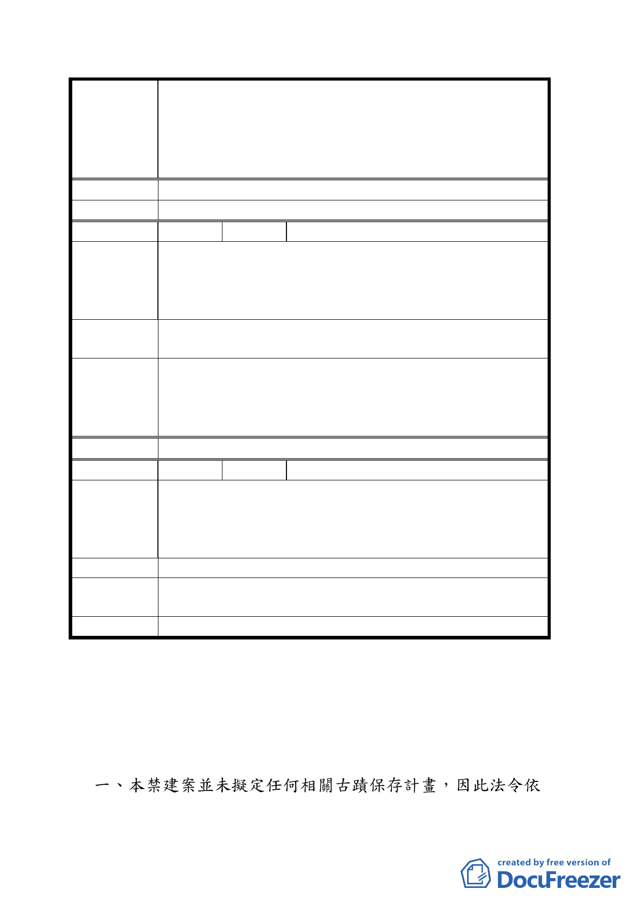

變更臺北市市民大道（新生北路至基隆路段）兩側第四之
一種住宅區、第四種住宅區、第三之二種住宅區、第三之
案 名 一種住宅區、第三種住宅區、道路用地為第三種商業區
（特）、第三種住宅區為公園用地暨劃設都市更新地區計畫
案
結 論 同意納入本計畫範圍，並於都市更新時准予合併街廓開發方式處理。
委員會決議 同專案小組審查結論。
編 號 ８ 陳情人 林琪
建議位置：新生南路、市民道道交口停車場用地
陳
情
理
由
1.尚未開闢。
2.停車需求可配合西南側公有土地開發增設停車空間。
3.市民大道軸帶景觀意象端點。
建議辦法
1.變更為公園用地。
2.允許相關附屬商業設施使用，改善公設開闢財源計畫。
有關渭水路、新生北路、市民大道交叉口停車場用地變更
專案小審查 為公園用地乙節，請發展局再就是否涉及土地法二一九條
結 論 徵收主管機關不同之問題，請發展局就變更為公園或停車
場兼廣場再予斟酌。提請大會報告。
委員會決議 同意變更為公園用地。
編 號 ９ 陳情人 林銘清
建議位置：中山區長安段二小段 554 地號
陳
情
理
由
該地號早期都市計畫規劃為安東街（八米道路）出入市民大
道之截彎用途，早期規劃截彎過大，本已不合時宜，同時市
民大道設計、施工亦未將該地號納入截彎道路用地。
建 議 辦 法 考量該地號之最佳利用價值有助地方發展。
專案小審查
結論
該建議已納入變更計畫內容。
委員會決議 同專案小組審查結論。
叁、臨時提案
案名：有關「配合台北市中正區齊東街日式宿舍歷史風貌保存
區辦理禁建案」審議決議，請 查照依程序辦理。
決議：本案除下列事項外，同意辦理禁建：
據刪除「文化資產保存法第三十六條」及「文化資產保存
一六